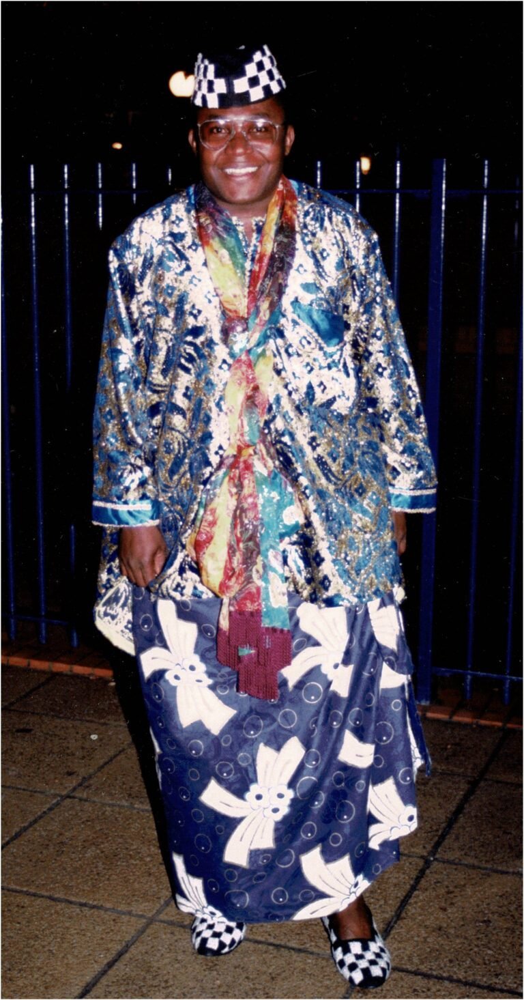
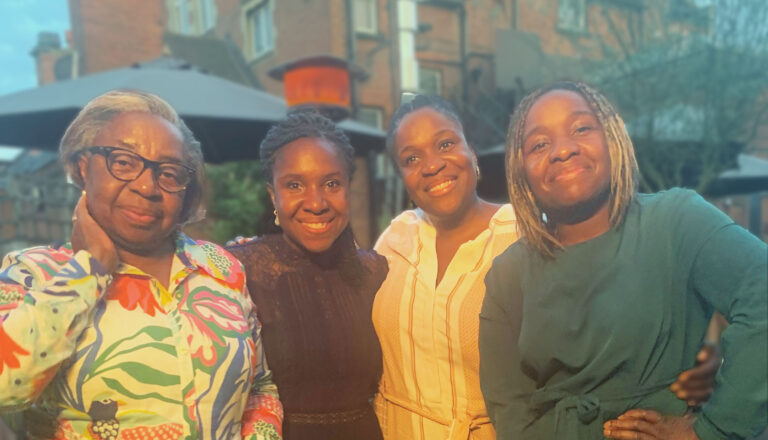

In loving memory
Dr Bassey Kubiangha
Dr Bassey Kubiangha Education is a non-governmental, non-profit, charitable organisation that was set up in loving memory of Dr Bassey Kubiangha, by us, his family.
To his friends and family, he was known by his initials, simply as BK.
BK was born in Calabar (Nigeria), spent his life working as a doctor working in Nigeria (Lagos, Oron, and Akpabuyo) and then in the UK, where he worked in general practice and emergency care. BK was dedicated to working with the communities in which he was based to improve the wellbeing of his patients.
BK was also an active member of the Cross River State and Calabar communities in London and actively sought to promote the welfare of these communities, with a particular focus on health education.

Our focus
For these reasons, when setting up the charity we decided to focus on:
Empowering individuals and community groups through health education
Making a difference
Our key objectives
Our key objectives are to:
- 01
Facilitate the provision of training for health promoters, community health workers, and traditional birth attendants in Calabar by providing a venue and resources that enable the training sessions to take place.
- 02
Facilitate health promotion activities within the community.
- 03
Provide a library that is free of charge and available to the whole community.
- 04
Award annual grants to medical students in the College of Medical Sciences, University of Calabar.
Our commitment
We remain committed to delivering these objectives as we emerge from the pandemic with renewed determination to make a positive impact on health education in Calabar.
Donate
Dr Bassey Kubiangha Education Trust is a registered charity in England & Wales (1107107)